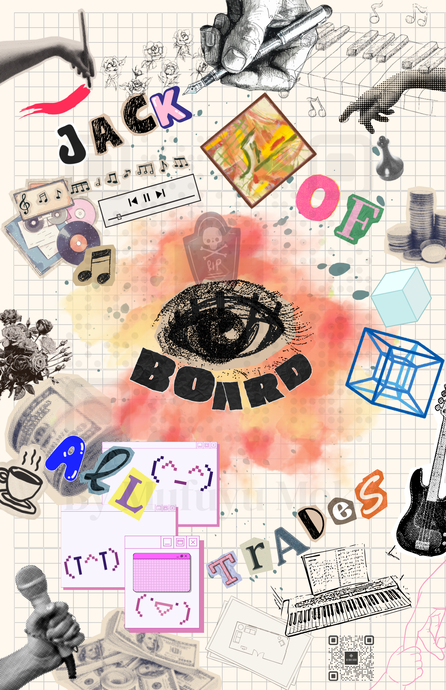

Building from absolute nothingness and exploring the unconventional. The labyrinth of my experiments includes:
Becoming a true Jack of All Trades. Over the next decade, I will execute a borderless identity:
Goal: Absolute individuality and freedom.
Status: Location Independent.
I am not confined to traditional corporate cubicles or rigid educational systems. My workspace exists wherever the server runs, the canvas opens, and my ideas flow.
Whether I'm managing projects, releasing music, or writing fiction, my "office" is an ecosystem I build myself.
My skillset is a direct reflection of my hobbies—a heavy collision between systematic engineering and artistic intuition:
My financial goals are not built on "flexing" luxury, but on Stability and Fuel for Experiments:
